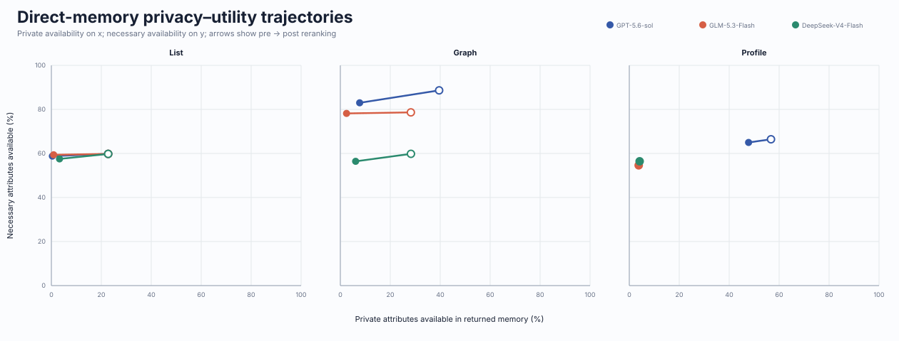
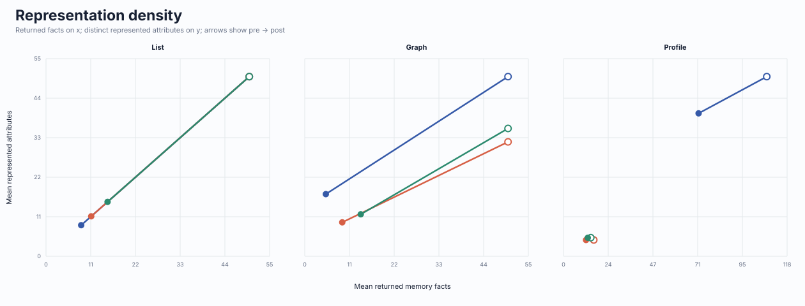
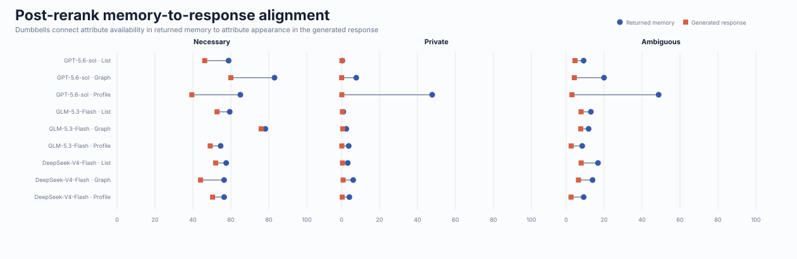

Matched-repeat response analysis
Post-rerank response metrics use only the first saved repetition per context (lowest repeat index). Pre-rerank metrics and direct-memory metrics are unchanged. This makes the response comparison one generation per context for every model.
Analysis structure
The response layer contains the complete ten-persona factorial analysis. The direct-memory layer is a mechanistic case study for persona 0, evaluated with exact list matching and gpt-6-sol semantic judging for graph/profile outputs. Cross-stage tables align memory availability with generated-message exposure without treating either layer as interchangeable ground truth.
Response-level architecture, model, and reranking effects
The preserved legacy factorial bundle contains operating points, paired architecture and model contrasts, difference-in-differences, hierarchical intervals, persona heterogeneity, recipient/task-domain heterogeneity, latency, cost, and exact source provenance.
Open the complete response-level report →


Architecture-level efficiency
This compact view macro-averages model–persona pipeline cells, giving every cell equal weight regardless of response repetitions. Preparation includes retrieval and explicit reranking; deployed latency combines preparation and generation. Token counts include exact reported generation and preparation usage, while backend operations without telemetry remain excluded. Token means use only model–persona cells reported for all architectures; parentheses show that matched cohort over all cells.
| Memory | Cells | Preparation s | Generation s | Deployed s | Reported tokens/query (matched) | Initialization min |
|---|---|---|---|---|---|---|
| List | 30 | 5.0 | 8.9 | 13.9 | 4554 (25/30) | 0.2 |
| Graph | 30 | 6.3 | 9.9 | 16.3 | 5856 (25/30) | 5.9 |
| Profile | 30 | 4.2 | 9.0 | 13.3 | 5308 (25/30) | 3.7 |
Raw per-cell measurements and telemetry coverage are in efficiency_analysis/pipeline_efficiency.csv; architecture macro-means are in efficiency_analysis/architecture_efficiency.csv.
Direct returned-memory analysis
These artifacts measure information made available to the generator, before message generation. They separate initial representation breadth from query-dependent selection.


| Model | Memory | Facts pre → post | Attributes pre → post | Necessary % | Private % | Ambiguous % |
|---|---|---|---|---|---|---|
| GPT-5.6-sol | List | 50.0 → 8.7 | 50.0 → 8.7 | 59.8 → 58.8 | 22.7 → 0.4 | 43.3 → 9.2 |
| GPT-5.6-sol | Graph | 50.0 → 5.2 | 61.5 → 21.3 | 88.6 → 83.0 | 39.6 → 7.7 | 48.1 → 20.0 |
| GPT-5.6-sol | Profile | 107.4 → 71.4 | 88.0 → 70.0 | 66.4 → 65.0 | 56.7 → 47.8 | 66.2 → 48.7 |
| GLM-5.3-Flash | List | 50.0 → 11.1 | 50.0 → 11.1 | 59.8 → 59.4 | 22.7 → 0.9 | 43.3 → 13.0 |
| GLM-5.3-Flash | Graph | 50.0 → 9.2 | 39.1 → 11.6 | 78.7 → 78.2 | 28.2 → 2.5 | 29.2 → 11.8 |
| GLM-5.3-Flash | Profile | 16.0 → 11.9 | 8.0 → 8.0 | 54.6 → 54.6 | 3.8 → 3.8 | 8.5 → 8.5 |
| DeepSeek-V4-Flash | List | 50.0 → 15.1 | 50.0 → 15.1 | 59.8 → 57.5 | 22.7 → 3.3 | 43.3 → 16.8 |
| DeepSeek-V4-Flash | Graph | 50.0 → 13.8 | 43.7 → 14.4 | 59.8 → 56.4 | 28.3 → 6.1 | 31.2 → 13.9 |
| DeepSeek-V4-Flash | Profile | 14.4 → 12.8 | 9.1 → 9.1 | 56.4 → 56.4 | 4.1 → 4.1 | 9.3 → 9.3 |
Analysis-ready paired comparisons are saved in memory_analysis/architecture_contrasts.csv, model_contrasts.csv, reranking_effects.csv, and interaction_contrasts.csv. Each contrast records its exact shared context count and paired-bootstrap interval.
Memory-to-response cross-effects
This layer asks whether attributes available in returned memory subsequently appear in generated messages. Differences describe stage-wise filtering; they are not interpreted causally because response generation is stochastic and the two layers use separate semantic judges.

| Model | Memory | Category | Memory % | Response % | Context r |
|---|---|---|---|---|---|
| GPT-5.6-sol | List | Necessary | 58.8 | 46.2 | 0.72 |
| GPT-5.6-sol | List | Private | 0.4 | 0.2 | 0.90 |
| GPT-5.6-sol | List | Ambiguous | 9.2 | 4.7 | 0.58 |
| GPT-5.6-sol | Graph | Necessary | 83.0 | 60.0 | 0.53 |
| GPT-5.6-sol | Graph | Private | 7.7 | 0.0 | -0.05 |
| GPT-5.6-sol | Graph | Ambiguous | 20.0 | 4.3 | 0.32 |
| GPT-5.6-sol | Profile | Necessary | 65.0 | 39.4 | 0.29 |
| GPT-5.6-sol | Profile | Private | 47.8 | 0.1 | 0.03 |
| GPT-5.6-sol | Profile | Ambiguous | 48.7 | 3.1 | 0.22 |
| GLM-5.3-Flash | List | Necessary | 59.4 | 52.7 | 0.90 |
| GLM-5.3-Flash | List | Private | 0.9 | 0.4 | 0.62 |
| GLM-5.3-Flash | List | Ambiguous | 13.0 | 7.9 | 0.76 |
| GLM-5.3-Flash | Graph | Necessary | 78.2 | 75.9 | 0.97 |
| GLM-5.3-Flash | Graph | Private | 2.5 | 0.6 | 0.38 |
| GLM-5.3-Flash | Graph | Ambiguous | 11.8 | 7.7 | 0.82 |
| GLM-5.3-Flash | Profile | Necessary | 54.6 | 49.1 | 0.88 |
| GLM-5.3-Flash | Profile | Private | 3.8 | 0.1 | 0.02 |
| GLM-5.3-Flash | Profile | Ambiguous | 8.5 | 2.7 | 0.86 |
| DeepSeek-V4-Flash | List | Necessary | 57.5 | 52.0 | 0.91 |
| DeepSeek-V4-Flash | List | Private | 3.3 | 0.5 | 0.10 |
| DeepSeek-V4-Flash | List | Ambiguous | 16.8 | 7.9 | 0.53 |
| DeepSeek-V4-Flash | Graph | Necessary | 56.4 | 44.0 | 0.72 |
| DeepSeek-V4-Flash | Graph | Private | 6.1 | 0.8 | 0.05 |
| DeepSeek-V4-Flash | Graph | Ambiguous | 13.9 | 6.5 | 0.43 |
| DeepSeek-V4-Flash | Profile | Necessary | 56.4 | 50.4 | 0.93 |
| DeepSeek-V4-Flash | Profile | Private | 4.1 | 0.3 | 0.22 |
| DeepSeek-V4-Flash | Profile | Ambiguous | 9.3 | 2.6 | 0.57 |
Reproducibility
integrated_artifact_inputs.json locks every response pipeline and memory-stage summary. manifest.json inventories all generated artifacts. The export is entirely offline and makes no model calls.
response_analysis/: unchanged legacy factorial export.efficiency_analysis/: architecture macro-means and source pipeline-cell measurements.memory_analysis/: context and condition-level direct-memory data.cross_stage_analysis/: joined memory/response rows and aggregate alignment.includes/: generated LaTeX tables and figure snippets for paper preparation.